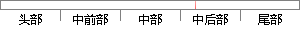

所有基于Cortex- M内核的微控制器产品
片段位置图

相似结果
相似片段：
-M4的STM32F4系列单片机 (MCU) 采用了意法半导体的NVM工艺和ART加速器™，在180 MHz的工作频率下通过闪存执行指令时可实现225 DMIPS/608 CoreMark的性能，是迄今所有基于Cortex-M内核的微控制器产品所达到的最高性能得分。 由于采用了动态功耗调整功能，通过闪存执行指令时的电流消耗范围为从STM32F410的89 µA/MHz到STM32F439的260 µA/MHz。 STM32F4系列
| 对比库： | WriteCheck云资源库 |
| 来源： | stmcu.com.cn 查看来源 |
| 发布时间： | 2017-01-10 |
| 相似率 | 63.16% （轻度抄袭） |